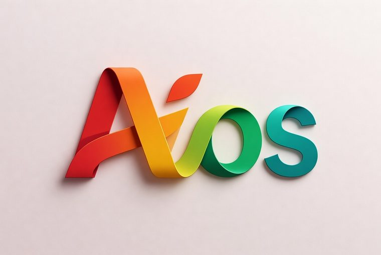

對稿 Duigao
設計看板 · AiOS 品牌基地
手機優先的文宣／影片對稿協作工具。海報是主畫面，討論比編輯更快。
看板本身用 AiOS 的紙底；產品畫面維持 app 真正的暖調暗色。光譜是兩邊共用的分類語言。
光譜 — 八色各有職務，沒有裝飾色
#BC1A1F
緊急 · 高優先
#C83624
修改點 · 進行中
#D85E2A
文案
#E4841D
文宣 · 海報
#E99E13
待處理
#8DB52E
企劃
#109958
已完成
#11978D
影片
接點 — 光譜不是換掉重點色，是把它接長
#C83624
#c45c4a — 現有 --accent
#D85E2A
app 現有的赤陶重點色正好落在光譜的紅與橙紅之間。既有畫面一個像素都不用改，光譜只是把它往兩側展開成分類色。
底盤 — 沿用 src/styles.css，不動
--bg
--bg-2
--panel
--raise
--line
--ink · #f4efe6
--ink-dim
--ink-faint
紙感光譜是前景，暖調暗底是背景。原稿在暗底上最乾淨，這點不變。
字級 — Noto Serif TC 只給標題，其餘一律 Noto Sans TC
Serif 28 / +2px
春季說明會文宣
Sans 18 / 600
待修改 4 項
Sans 15 — 修改點內文
日期的字太小，站遠一點看不到
Sans 13.5 — 註記
尚未同步，已保存在這台裝置
Sans 12 — meta
阿哲 · 3 分鐘前 · 初稿
Sans 11 — 工具列
修改點